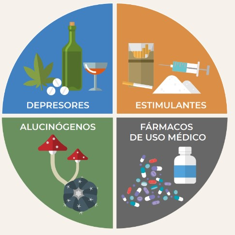
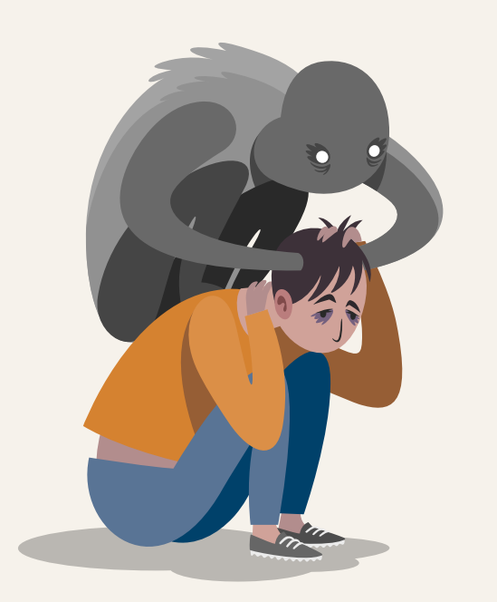

LAS DROGAS
Y SU CLASIFICACIÓN
¿Qué son?
La Organización Mundial de la Salud (OMS) define el término droga o sustancia psicoactiva como
aquel compuesto de origen natural, semisintético o sintético que
produce alguna modificación en
una o más funciones en el organismo, sea cual sea la vía de administración.
Actualmente se clasifican por sus
efectos en cuatro grandes familias:
• depresores
• estimulantes
• alucinógenos
• fármacos de uso médico

Depresores
Los depresores del SNC son fármacos que incluyen sedantes, tranquilizantes y medicamentos hipnóticos. Entre los sedantes se encuentran principalmente los barbitúricos (por ejemplo, el fenobarbital), pero también se incluyen medicamentos hipnóticos sedantes no benzodiacepínicos como Ambien® y Lunesta®. Los tranquilizantes incluyen las benzodiacepinas, como Valium® y Xanax®, los relajantes musculares y los medicamentos ansiolíticos. Estas drogas pueden hacer más lenta la actividad del cerebro, por lo que son útiles para tratar la ansiedad, el pánico, las reacciones de estrés agudo y los trastornos del sueño.

Estimulantes
Los estimulantes son drogas que provocan en la gente la sensación de estar más despierta y con más energía, por medio de la activación o la excitación del sistema nervioso. Hay muchos estimulantes de uso corriente, algunos de ellos son plantas; otros sustancias químicas fabricadas en los laboratorios. Estas diferentes drogas producen efectos algo distintos y sus efectos duran tiempos variables, pero todas ellas actúan de manera aproximadamente igual, a través del aumento de energías liberadas por el sistema nervioso.
Las drogas estimulantes actúan causando que las fibras nerviosas liberen adrenalina u otros neurotransmisores estimulantes. Aunque los diferentes estimulantes consiguen este efecto de distintas maneras, el resultado es siempre el mismo: la liberación de más neurotransmisores estimulantes. De manera tal que la estimulación que siente el consumidor cuando toma drogas estimulantes es simplemente producto de la propia energía del cuerpo, que obliga a trabajar al sistema nervioso. La droga consigue que el organismo emplee su energía más deprisa o en mayores cantidades que en condiciones ordinarias.
Esa liberación de energía hace que la persona se sienta más despierta, más alerta y, a veces, más feliz. Hace que el corazón lata con más frecuencia y puede causar aumento de la presión sanguínea.
Una de las razones por las cuales los estimulantes son tan apetecidos es porque dan un control temporal sobre los ritmos de vigilia del cuerpo y las subidas y caídas de ánimo.
Alucinógenos
Las drogas alucinógenas, también llamadas psicodélicas, psicotomiméticas, visionarias o enteógenas, son sustancias que modifican el estado de consciencia, el estado de ánimo y, especialmente, la percepción. Entorpecen la capacidad de la persona de pensar y comunicarse racionalmente o incluso de reconocer la realidad y a veces pueden comportar conductas extravagantes y/o peligrosas.
Las drogas alucinógenas se extraen de plantas, hongos y por síntesis química.
A pesar de que la más conocida –por su larga historia– es el LSD, actualmente las más utilizadas son las setas alucinógenas.
En el caso de las drogas alucinógenas, sus efectos tienen una estrecha relación con las expectativas de la persona consumidora y el contexto donde se encuentre. Los efectos pueden ser extremadamente variables y dependen de:
La dosis consumida. El entorno en que se use la sustancia (Setting).
La personalidad, el estado de ánimo y las expectativas del usuario (Set).
En algunos casos, ciertos alucinógenos pueden ser adictivos y las personas pueden desarrollar tolerancia. Aunque estas drogas están altamente asociadas, especialmente en algunas personas, a consecuencias indeseables (que pueden limitarse a unas horas –en algunos casos– o convertirse en permanentes e irreversibles).
Fármacos de uso médico
Normalmente no se presenta adicción a los medicamentos con receta si usted toma las dosis correctas para tratar su afección.
La adicción significa que su mente y su cuerpo dependen del medicamento. Usted no es capaz de controlar su consumo y lo necesita para poder funcionar en la vida diaria.
El abuso de drogas por un período de tiempo puede llevar a la tolerancia. Esto significa que se necesita más y más medicamento para alcanzar la misma sensación de bienestar. Si intenta dejar de usar la droga puede tener reacciones. Estas se llaman síntomas de abstinencia y pueden incluir:
Fuertes ansias de consumir el medicamento
Cambios de ánimo desde sentirse deprimido o agitado hasta ansioso
Incapacidad para concentrarse
Ver o escuchar cosas que no están ahí (alucinaciones)
Reacciones físicas que pueden incluir dolores de cabeza, dolores de cuerpo, mayor apetito y no dormir bien
Síntomas que ponen en peligro la vida, en consumidores de ciertas drogas por largo tiempo
Opciones de tratamiento
El tratamiento comienza con reconocer que existe un problema. Una vez que decida que quiere hacer algo sobre su uso de medicamentos, el siguiente paso es buscar ayuda y apoyo.
Los programas de tratamiento utilizan técnicas de cambios de comportamiento a través de consejería (terapia conversacional). La meta es ayudarlo a entender sus comportamientos y por qué usa drogas. Buscar la participación de familiares y amigos durante la terapia puede ayudar a apoyarlo y evitar que vuelva a utilizar la droga (recaída). Los programas de tratamiento también le enseñan a manejar mejor las situaciones que lo llevaron a usar o a recaer en el pasado.
Con algunas adicciones a medicamentos, como a los opioides, también se pueden utilizar medicamentos para ayudar a reducir los efectos de los opioides en el cerebro. Se pueden utilizar otros medicamentos para reducir las ansias y los síntomas de abstinencia.
Si presenta síntomas serios de abstinencia, puede ser necesario que permanezca en un programa de tratamiento residencial. Ahí se vigilarán su salud y seguridad a medida que se recupera.